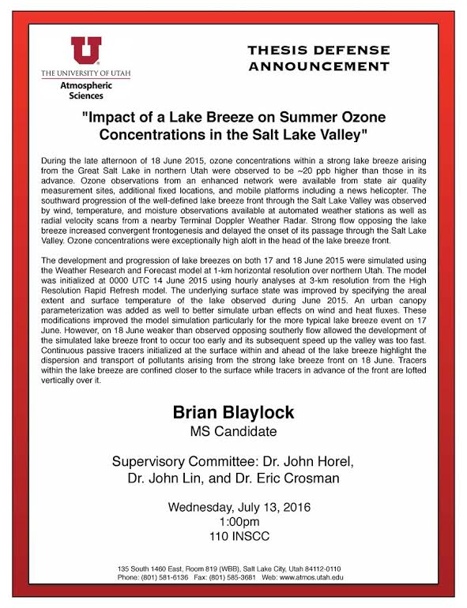
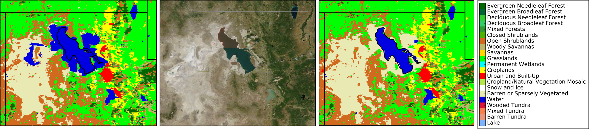
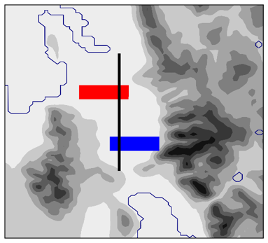
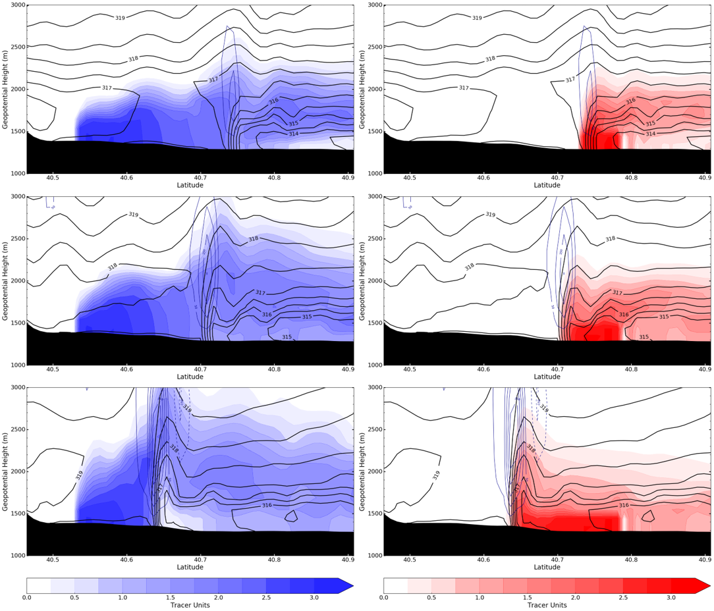

MS: Impact of a Lake Breeze on Summer Ozone
Concentration in the Salt Lake Valley

{kind=link}
Observations
TDWR radial velocity and MesoWest surface wind observations for June 18-19, 2015. Red dot is location of TDWR radar. Green is winds blowing away from radar. Orange is wind blowing toward radar. Blue outline is boundaries of Great Salt Lake and Utah Lake. Grey shading shows terrain.
(Lake breeze begins to move south at approx 30 seconds.)
Longer movie here
Back to Top
WRF Simulation
Modifications
Changed the lake boundary to match current lake levels. Left is the HRRR/WRF default land use categories
for northern Utah. Middle is a Terra Satellite image from the MODIS instrument on 18 June 2015. Right is
the modified land use with changes in the lake size. Points no longer lake were changed to barren land.
Far right is a key of the land use categories.

Passive Tracers
 Small image shows the location tracers were initialization and the cross section area. Red is a 5x15 km area in the north end of the valley. Blue is a 5x15 km area at the south end of the valley. Tracers were emitted each time step in the three lowest model levels and allowed to be dispersed by the wind field. The cross section is 50 km long and 3 km wide. The tracer units for the three km wide cross section are summed together and the vertical wind speeds are averaged. The Great Salt Lake and Utah Lake are outlined in blue. Terrain is shaded grey.
Vertical cross section of potential temperature, vertical velocity, and passive tracers on 18 June 2015 at
1800 UTC (top row) 1900 UTC (middle row) 2000 UTC (bottom row). Potential temperature is contoured with black lines every 0.5 K.
Vertical velocity is contoured every 50 cm/s for motion greater than 50 cm/s in solid dark blue contours and less than -50 cm/s
in dashed dark blue. Passive tracers emitted at the north and south end of valley are shaded red and blue respectively.
The cross section is 3 km wide where the tracer elements are summed together while the vertical winds are averaged.

Back to Top
Just practicing some plot making with plotly showing vector winds and temperature of a
cold front that passed WBB on 18 February 2015